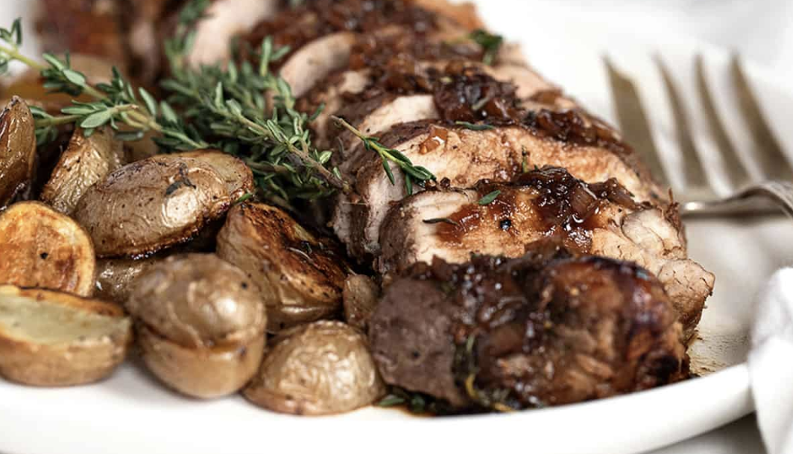

Figgy Balsamic Pork Recipe

Incredible Homemade Dish!
Ingredients:
- 1 Shallot
- 12 ounce of potatoes
- 6 ounce of green beans
- 1 packet of Chicken stock concentrate
- 1/4 ounce rosemary
- 12 ounce pork tenderloin
- 2 tbsp fig jam
- 5 tspn balsamic vinegar
- Also, salt, olive oil, kosher salt, and pepper
Cooking Steps:
-
Adjust racks to top and middle positions and preheat oven to 450 degrees. Wash and dry all produce. Halve, peel, and finely chop shallot. Strip rosemary leaves from stems; chop leaves until you have 2 tsp (4 tsp for 4 servings). Halve potatoes.
-
Toss potatoes on a baking sheet with a drizzle of olive oil, half the chopped rosemary, and a pinch of salt and pepper. Arrange cut sides down. Roast on top rack, tossing halfway through, until tender and crisped, 20-25 minutes.
-
Meanwhile, pat pork dry with paper towels; season all over with salt and pepper. Heat a drizzle of olive oil in a large pan over medium heat. Add pork and sear, turning occasionally, until browned all over, 4-8 minutes. Transfer to one side of a second baking sheet.
-
Toss green beans with a drizzle of olive oil and a pinch of salt and pepper on opposite side of baking sheet from pork. Roast on middle rack until pork is cooked through and green beans are tender, 10-12 minutes. Let pork rest a few minutes after removing from oven, then cut crosswise into thin slices.
-
Heat a drizzle of olive oil in pan used for pork over medium heat. Add shallot and remaining chopped rosemary. Cook, stirring, until softened, about 1 minute. Stir in stock concentrate, vinegar, 1 TBSP jam (2 TBSP for 4 servings), and ¼ cup water (½ cup for 4). Simmer until thick and saucy, 2-3 minutes. Remove pan from heat and stir in 1 TBSP butter until melted. Season with salt and pepper.
-
Divide potatoes, green beans, and pork between plates. Drizzle pan sauce over pork and serve.
Enjoy!
Home